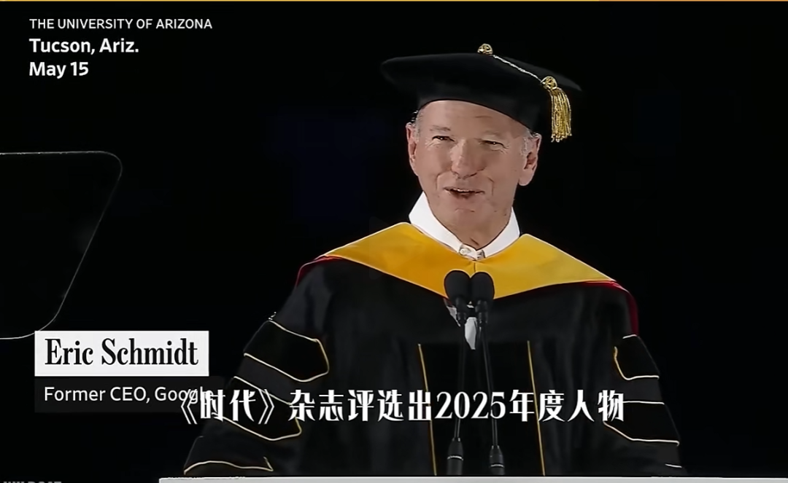
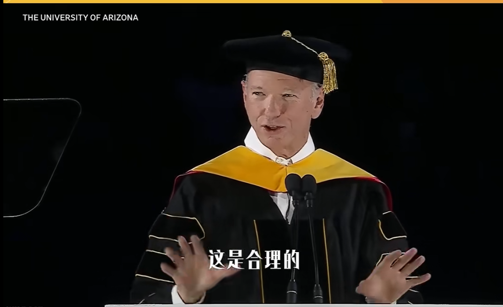
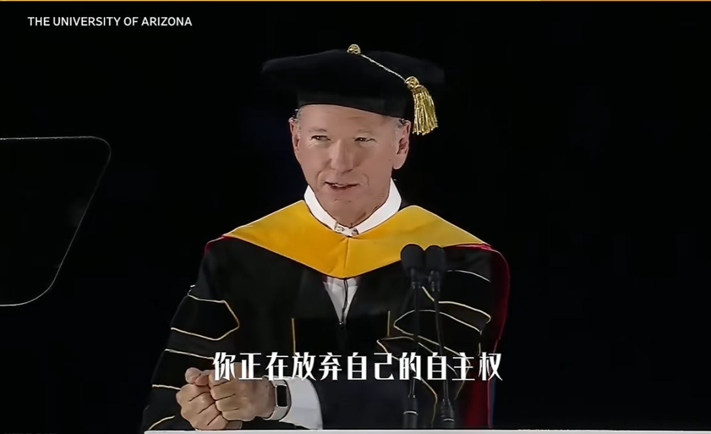
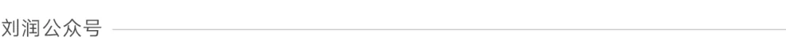
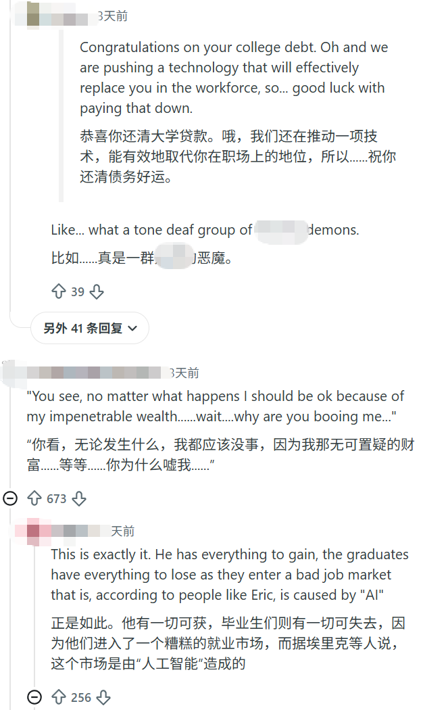

💡 前谷歌CEO被群嘲：当越来越多的人，开始反感AI
Former Google CEO Mocked: As More People Begin to Resent AI
2026年夏天，美国毕业季的各大高校，被情绪笼罩envelop[ɪnˈveləp] v. 笼罩、包围。
这本该是充满希望、憧憬yearn[jɜːn] v. 憧憬、向往未来的时刻。毕业生穿着长袍，戴着方帽，迎接greet[ɡriːt] v. 迎接、欢迎人生下一站。学校请来成功人士，来传授impart[ɪmˈpɑːt] v. 传授、赋予人生经验和真知灼见。
但这次，情况好像不太对。因为，台下不是热烈enthusiastic[ɪnˌθjuːziˈæstɪk] adj. 热烈的、热情的的掌声，而是毫不留情的嘘声。


施大爷灌鸡汤，给学生们灌生气了
先把镜头拉回那个尴尬awkward[ˈɔːkwəd] adj. 尴尬的、难堪的的现场。这里，是亚利桑那大学的毕业graduation[ˌɡrædʒuˈeɪʃn] n. 毕业典礼。
一开始，施密特是这么说的：
今天的技术变革transform[trænsˈfɔːm] v. 变革、改变，比以往更大更快、影响更深。它将触及每个职业、每间教室、每家医院、每个实验室laboratory[ləˈbɒrətri] n. 实验室、每个人，以及每段关系。
每个人。每段关系。这意味着，在AI的浪潮surge[sɜːdʒ] n. 浪潮、汹涌下，你无处可逃。这个说法，已经触及了学生们的敏感sensitive[ˈsensətɪv] adj. 敏感的神经，但总体而言，场面还算平静。
接下来，他又试图attempt[əˈtempt] v. 试图、尝试展示自己“了解年轻人的恐惧”：
我知道你们很多人对此的感受。你们这代人的恐惧是：未来已经被写定了，机器逼近，工作消失，气候崩溃，政治撕裂，你们正在继承inherit[ɪnˈherɪt] v. 继承一个并非由你们造成的烂摊子。
情况这么糟。那，怎么办呢？施密特摆着小手，慢悠悠地说：
这不怪你们，这是合理legitimate[lɪˈdʒɪtɪmət] adj. 合理的、正当的的。

这一刻，学生们短暂transient[ˈtrænziənt] adj. 短暂的安静了。因为一个来自精英elite[eɪˈliːt] n. 精英、杰出人物阶层的人，承认他们的恐惧不是矫情，懒惰，而是合理的。
但施密特话锋一转，双手一握，开始“猛灌鸡汤”：
把未来当作注定的事来谈论，就是在放弃abandon[əˈbændən] v. 放弃、舍弃主动权。未来不会自己到来。它在实验室里、在宿舍里、在初创venture[ˈventʃə] n. 初创企业公司里、在课堂上、由像你们一样的人建造的。

现场越来越嘈杂tumultuous[tjuːˈmʌltʃuəs] adj. 嘈杂的、喧闹的。你一个身家百亿的老头，让我去“建设未来”，可我实习internship[ˈɪntɜːnʃɪp] n. 实习都找不到。于是，施密特不得不停下来，带着几分无奈reluctantly[rɪˈlʌktəntli] adv. 无奈地、不情愿地：
至少让我把这个观点perspective[pəˈspektɪv] n. 观点、视角说完。
但这句话之后，他“立即被更加大声的喧哗clamor[ˈklæmə] n. 喧哗、吵闹淹没”。施密特没有放弃。终于，他说出了那句最经典classic[ˈklæsɪk] adj. 经典的的话：
当有人给你火箭rocket[ˈrɒkɪt] n. 火箭飞船上的座位，不要问是哪个，坐上去就行。If you're offeredoffer[ˈɒfə] v. 提供 a seat on a rocket ship, don't ask which seat. Just get on.
有趣amusing[əˈmjuːzɪŋ] adj. 有趣的的是，这句话其实施密特在几十年前就说过。
Facebook前COO桑德伯格在演讲中回忆，当年犹豫hesitate[ˈhezɪteɪt] v. 犹豫、迟疑要不要去谷歌，施密特就对她说了这句话。从此，成为职场career[kəˈrɪə] n. 职场、事业金句。
但同样的一句话，却在今天招致满场嘲讽ridicule[ˈrɪdɪkjuːl] n. 嘲讽、嘲笑。
最后，演讲oration[ɔːˈreɪʃn] n. 演讲、演说不得不在铺天盖地的嘘声中，草草收场。

当年的两个英国，和今天的两个现实
从他的视角看，当然没有。甚至，他还非常委屈grievance[ˈɡriːvəns] n. 委屈、不满。
作为一个70多岁的老人，施密特经历undergo[ˌʌndəˈɡəʊ] v. 经历、经受过完整的计算机革命、互联网革命。
在谷歌当CEO的10年，他看到了信息检索retrieve[rɪˈtriːv] v. 检索、找回成本，从一周跑一次图书馆，降到五秒一次的搜索。他看到了Android，让几十亿部手机长出了大脑。
而过去50年，技术technology[tekˈnɒlədʒi] n. 技术，确实不止一次改变了世界。
中国农村的大爷大妈，都用上了移动支付payment[ˈpeɪmənt] n. 支付。非洲偏远remote[rɪˈməʊt] adj. 偏远的地区的孩子，也能抱着pad上网课。用手机翻译translate[trænsˈleɪt] v. 翻译，普通人可以看懂任何一种语言。
所以，在他的叙事narrative[ˈnærətɪv] n. 叙事、叙述里，技术是向善的。
技术连接世界，让知识平权，AI像当年的电力，把人类从繁琐重复的劳动中解放liberate[ˈlɪbəreɪt] v. 解放出来。他看到的，是长期主义，是10年后生产力productivity[ˌprɒdʌkˈtɪvəti] n. 生产力的大爆发。
而这群年轻人，是时代最大的受益benefit[ˈbenɪfɪt] n. 受益、好处者。
因为，他们出生时就有互联网internet[ˈɪntənet] n. 互联网。他们读大学时就有AI助手assistant[əˈsɪstənt] n. 助手、助理。他们刚开始工作，就赶上了AGI的曙光dawn[dɔːn] n. 曙光、黎明。他们应该在兴奋excitement[ɪkˈsaɪtmənt] n. 兴奋中，奔向新大陆。
这就是典型typical[ˈtɪpɪkl] adj. 典型的的精英叙事。理性、宏大、充满乐观optimistic[ˌɒptɪˈmɪstɪk] adj. 乐观的主义精神。
但是，听到的这些话的人，又是什么滋味flavor[ˈfleɪvə] n. 滋味、感受呢？
演讲之后，网上出现了大量massive[ˈmæsɪv] adj. 大量的嘲讽。
有人说：他真的对着一屋子找不到工作employment[ɪmˈplɔɪmənt] n. 工作、就业的学生，说“AI很棒”。还有人说：我学了4年计算机，但实习工作被AI替代substitute[ˈsʌbstɪtjuːt] v. 替代、取代了。今天有人告诉我，未来很美好wonderful[ˈwʌndəfl] adj. 美好的，让我跳上火箭。可我哪一节火箭都没赶上catch[kætʃ] v. 赶上、抓住。

（图片来自Reddit）
说这话的人，可能刚刚毕业，还背着学费贷款loan[ləʊn] n. 贷款。他们在出租屋里，往外投着简历resume[rɪˈzjuːm] n. 简历，却发现由于AI，市面上已经不再需要那么多初级岗位。
他们没空琢磨ponder[ˈpɒndə] v. 琢磨、思考十年后，世界会如何。他们担心的，是下个月的房租rent[rent] n. 房租。
根据数据，2026年第一季度，美国大学毕业生的失业率unemployment[ˌʌnɪmˈplɔɪmənt] n. 失业率是5.7%，招聘率则回落到2014年的低谷水平。其中，42%的新生预期anticipate[ænˈtɪsɪpeɪt] v. 预期、预料AI会影响他们选择的职业，大约10%，已经因AI改变了专业方向。
而这种“在同一个国家nation[ˈneɪʃn] n. 国家，活成两个世界”的感觉，不是今天才有的。
19世纪，小说家、后来的英国首相本杰明·迪斯雷利提出一个概念concept[ˈkɒnsept] n. 概念：
两个英国（Two Nations）。
什么意思呢？这个概念提出时，英国正处于工业industry[ˈɪndəstri] n. 工业革命。蒸汽机轰隆作响，工厂主的财富以百倍速度累积accumulate[əˈkjuːmjəleɪt] v. 累积、积累。
所以，虽然是一个国家，但英国的精英和老百姓folk[fəʊk] n. 百姓、人们，生活在两个完全不同的世界。精英们看到的是机器轰鸣，是日不落帝国的辉煌glory[ˈɡlɔːri] n. 辉煌、荣耀。但工人感受到的，是下水道的恶臭、16小时的工时和被机器替代的恐惧dread[dred] n. 恐惧、畏惧。
今天面对confront[kənˈfrʌnt] v. 面对AI，世界再次进入了 “两个现实”。
精英们有资产asset[ˈæset] n. 资产，有人脉，有被动收入。他们的时间坐标轴，天然延伸extend[ɪkˈstend] v. 延伸、扩展到十年、二十年。因为能承受endure[ɪnˈdjʊə] v. 承受、忍受短期阵痛，所以看得见远方。
但普通人面对的，是这个月的贷款，下个月孩子的学费tuition[tjuˈɪʃn] n. 学费，明年自己失业的可能。他们的时间坐标轴，被强行压缩compress[kəmˈpres] v. 压缩到下个月、半年、最多一年。
大家都在讨论discuss[dɪˈskʌs] v. 讨论现实。但讨论的，不是一个时间，一个世界sphere[sfɪə] n. 世界、领域。

相对剥夺感：技术革命的代价cost[kɒst] n. 代价、成本，从来都是预付的
如果只是“活在不同世界”，事情其实还不至于发展evolve[iˈvɒlv] v. 发展、演化成这样。
越来越多人觉得，高速前进advance[ədˈvɑːns] v. 前进、推进的世界，正在把自己甩在后面。
这种感觉，在社会学领域domain[dəˈmeɪn] n. 领域，其实有个概念：
二战期间，美国社会学家萨缪尔·斯托弗研究美军士气morale[məˈrɑːl] n. 士气时，发现了一个反直觉的现象：在晋升机会更多的航空兵里，抱怨“不公平”的人，反而比晋升机会少的宪兵更多。
为什么？因为宪兵感觉，大家都升不上去，没啥可抱怨complain[kəmˈpleɪn] v. 抱怨的。但航空兵看到的，是：为啥身边的人都升上去了，我还在原地踏步stagnation[stæɡˈneɪʃn] n. 停滞？
很多时候，痛苦misery[ˈmɪzəri] n. 痛苦不是绝对值，而是相对值。
这就是，相对剥夺deprive[dɪˈpraɪv] v. 剥夺感。一个人有没有“感觉被时代抛弃”，不看他收入多少，而是看他参照reference[ˈrefrəns] n. 参照、参考系里的人正在经历什么。
所以，真正刺痛人的，是台上的人在讲：技术终将带来进步progress[ˈprəʊɡres] n. 进步。但台下的人觉得：怎么我才是那个进步的代价？
回看每次技术革命，最容易出现emerge[iˈmɜːdʒ] v. 出现、浮现“相对剥夺感”的地方，就在这里。
因为，技术革命的收益yield[jiːld] n. 收益，通常是慢慢分配的。但技术革命的代价，往往是立刻immediate[ɪˈmiːdiət] adj. 立刻的到来的。
1811年，英国诺丁汉郡。
一群纺织textile[ˈtekstaɪl] n. 纺织工人在深夜冲进工厂，砸毁织机。后来，运动迅速蔓延spread[spred] v. 蔓延、传播。英国政府，甚至出动军队镇压suppress[səˈpres] v. 镇压、压制。这就是：卢德运动movement[ˈmuːvmənt] n. 运动。资本家欢呼生产效率提升几百倍，但工人觉得，机器抢走了手艺和尊严dignity[ˈdɪɡnəti] n. 尊严。
2000年代，互联网普及popularize[ˈpɒpjələraɪz] v. 普及。
电商、搜索、门户网站崛起rise[raɪz] v. 崛起。互联网公司，讲的是信息平权和连接世界，但很多普通人觉得，自己赖以生存survive[səˈvaɪv] v. 生存的行业，正在被互联网吞掉。书店倒闭，传统广告公司失去客户，线下零售被电商挤压squeeze[skwiːz] v. 挤压、压缩。
OpenAI的估值valuation[ˌvæljuˈeɪʃn] n. 估值飙升至千亿，英伟达的芯片供不应求，科技精英们在讨论“文明跃迁”。但年轻人看到的，是IBM裁员layoff[ˈleɪɒf] n. 裁员，是文案、翻译、甚至初级律师等岗位，都不再被需要。因此，瑟瑟发抖shiver[ˈʃɪvə] v. 发抖、颤抖。
所以，今天年轻人反感resent[rɪˈzent] v. 反感、厌恶的，未必是AI本身，而是一种越来越强烈的感觉：
那个被所有人反复赞美praise[preɪz] v. 赞美的未来，好像根本没我的位置。
可很多技术革命里，年轻人往往frequently[ˈfriːkwəntli] adv. 往往、经常最受益。因为新技术，会奖励更年轻、更灵活flexible[ˈfleksəbl] adj. 灵活的、更容易学习新规则的人。

过去技术革命替代工作，但这次动摇的是预期expectation[ˌekspekˈteɪʃn] n. 预期
这可能因为，这次AI革命和之前的技术革命，有3个本质essence[ˈesns] n. 本质不同。
第一个本质不同：AI大规模冲击impact[ˈɪmpækt] n. 冲击、影响脑力劳动。
过去几百年，技术革命替代replace[rɪˈpleɪs] v. 替代的大多是“手上的活”。蒸汽机替代手工，流水线替代作坊workshop[ˈwɜːkʃɒp] n. 作坊，机器人替代车间工人。冲击最严重severe[sɪˈvɪə] adj. 严重的的，往往是蓝领。
所以，程序员programmer[ˈprəʊɡræmə] n. 程序员看到工厂机器人，不觉得自己会被影响。律师lawyer[ˈlɔːjə] n. 律师看到流水线，不会觉得自己会被替代。
但这次的AI，最先替代的，是之前的脑力mental[ˈmentl] adj. 脑力的活动。比如，写代码、做PPT、整理会议纪要、审核audit[ˈɔːdɪt] v. 审核合同。更高学历diploma[dɪˈpləʊmə] n. 学历，不再天然等于安全。
第二个本质不同：扩散diffuse[dɪˈfjuːz] v. 扩散速度超过社会适应速度。
工业革命revolution[ˌrevəˈluːʃn] n. 革命，用了几十年。从蒸汽机到火车到工厂，社会有足够的时间建立establish[ɪˈstæblɪʃ] v. 建立新岗位、形成新规则。代价，被时间摊薄dilute[daɪˈluːt] v. 摊薄、稀释了。
互联网，用了十几年。从拨号上网到4G普及，传统媒体衰落decline[dɪˈklaɪn] v. 衰落了，但有了新媒体。零售retail[ˈriːteɪl] n. 零售店倒闭了，但有了快递员。
但AI的一路狂奔，让我这个经历过互联网革命的人，也目不暇接dazzle[ˈdæzl] v. 使眼花缭乱。
根据SWE-bench Verified测评benchmark[ˈbentʃmɑːk] n. 基准测试，2023年底，GPT-4测试的得分，只有1.7%。2024年中，到50%。最近，GPT-5.5得分score[skɔː] n. 得分82.6%。而人类程序员的表现performance[pəˈfɔːməns] n. 表现，大约是70%。
两年。AI的编程能力，从远远不如，到超越surpass[səˈpɑːs] v. 超越人类。
过去，一个大学毕业生，哪怕能力普通，至少还能从客服、运营、助理这些岗位慢慢成长thrive[θraɪv] v. 成长。查资料、做表格、改代码……这些重复但重要的工作，是人成长的台阶ladder[ˈlædə] n. 阶梯、台阶。但这些台阶，正在被一层层抽掉remove[rɪˈmuːv] v. 移除。
截至2026年5月，美国科技公司裁员超过11万，接近48%归因attribute[əˈtrɪbjuːt] v. 归因于于AI。
第三个本质不同：真正冲击的，是稳定预期的崩塌collapse[kəˈlæps] v. 崩塌。
过去，人们相信努力会带来回报reward[rɪˈwɔːd] n. 回报。
学一门手艺、进一个行业、深耕cultivate[ˈkʌltɪveɪt] v. 深耕、培养十年，回报是确定的。可能不会暴富wealthy[ˈwelθi] adj. 富有的，但至少不会失业。现在，学了Python，明年AI是不是自己就会写了？我现在做设计，干咨询consulting[kənˈsʌltɪŋ] n. 咨询，后年大模型是不是能直接出报告？
这种稳定预期的崩塌，比失业更可怕terrifying[ˈterɪfaɪɪŋ] adj. 可怕的。
失业，是一个事件event[ɪˈvent] n. 事件。规划失能，是一种状态state[steɪt] n. 状态。
前者咬咬牙，还能重新出发departure[dɪˈpɑːtʃə] n. 出发。后者，让人陷入持续、无法终止的焦虑anxiety[æŋˈzaɪəti] n. 焦虑。

我们都知道AI技术很牛。但技术是技术，社会society[səˈsaɪəti] n. 社会是社会。AI的发展，正在让很多普通人跟不上脚步pace[peɪs] n. 脚步、步伐。这个问题，会是我们这代人逃避不开的社会命题proposition[ˌprɒpəˈzɪʃn] n. 命题、议题。
对每一批人，都是如此。
对刚毕业的大学生undergraduate[ˌʌndəˈɡrædʒuət] n. 大学生。我理解你慌得一批。但这并不怪你。只是，过去20年，那套“好好读书，进大厂，拿高薪”的叙事模型，正在快速失效invalidate[ɪnˈvælɪdeɪt] v. 使失效。这是整个社会必须共同面对的难题dilemma[dɪˈlemə] n. 难题。
对正在被AI冲击的职场人。赶紧保留证据evidence[ˈevɪdəns] n. 证据，万一老板动了歪心思，努力争取权益。但你也得早做打算plan[plæn] n. 计划。尤其当你做的，是那些被快速自动化automate[ˈɔːtəmeɪt] v. 自动化的高危脑力劳动，比如程序员、文案，设计，策划。否则，再蹉跎procrastinate[prəʊˈkræstɪneɪt] v. 蹉跎、拖延几年，还是躲不开整个行业的变革。
对受益于AI技术的人们。比如大模型创业者、算法工程师，“一人公司”老板。务必保持同理心empathy[ˈempəθi] n. 同理心，谨言慎行。你们积累的财富fortune[ˈfɔːtʃuːn] n. 财富，可能会远超此前技术革命的受益者。任何高高在上的精英说教preach[priːtʃ] v. 说教，都是在给社会的伤口上撒盐。
今天这个世界，比起历史上任何时候，都更加先进，却更难共情empathize[ˈempəθaɪz] v. 共情。
1、Google Billionaire Eric Schmidt Booed Over AI Views in Graduation Speech at University of Arizona
2、Uncertainty Around AI’s Impact on Careers Clouds Students’ College Decisions
3、Young college graduates face a weaker labor market—but a more mixed picture than the headlines suggest
4、美国科技企业，缘何成裁员“重灾区epicenter[ˈepɪsentə] n. 重灾区”
观点 / 刘润 主笔 / 景九 编辑 / 歌平 版面 / 黄静